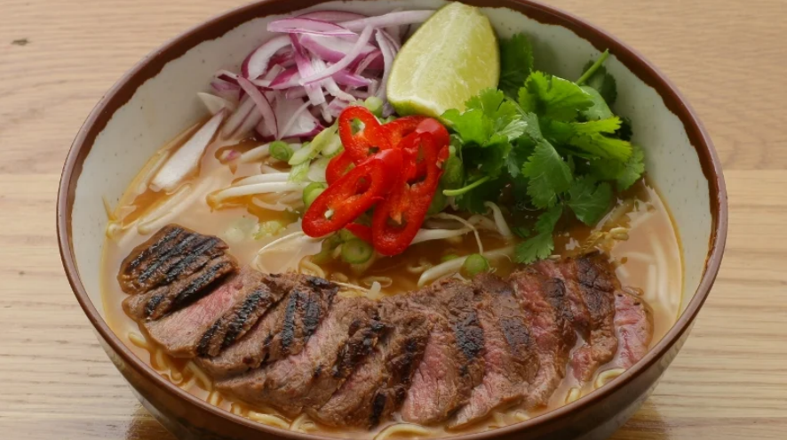

Description
A delicious and filling main from Japan with a meat broth, special noodles and toppings of your choice.
Ingredients
- 2 Sirloin steaks
- Vegetable oil
- 250 g Ramen noodles
- 1 l Chicken and pork stock
- 2 tblsp Teriyaki sauce
- 2 tblsp Chilli sauce
- 150 g Beansprouts
- Coriander
- 1/2 of an onion
- 1 Lime, quarted,
- 1 Sliced red chilli
- 4 Spring onions (sliced on the diagonal)
Steps
- Blanch the beansprouts in boiling water, drain and refresh in cold water.
- Cook the noodles in a large pan of boiling water for 2 minutes until just tender
- Drain andrefresh under cold water.
- Preheat the grill and lightly oil and season the sirloin steak.
- Grill for 1-2 minutes on each side, or until medium rare. Allow to rest for a few minutes.
- Then brush the steak with teriyaki sauce and slice on the diagonal.
- Heat the chicken stock until boiling and stir in the chilli sauce.
- Put the steak on top of the noodles and the rest of the ingredients on top of the beansprouts.
Return to top
Check Other Recipes